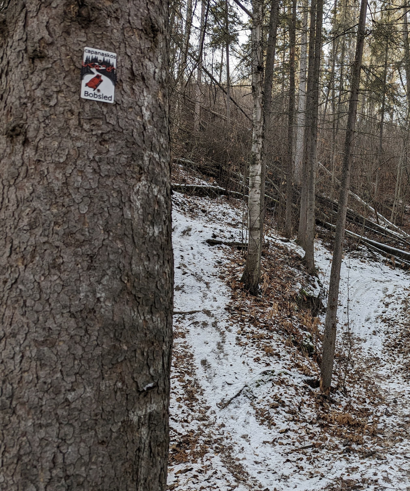

"Bobsled — literally 'little sled / little toboggan'"

Source design reference for the Bobsled plaque (root folder design file)
The plaque reads capanaskos — 'little sled', the diminutive of capanâsk 'toboggan, sled'. capanâsk is the Plains Cree noun for the wood-runner sled — the long flat sleigh historically pulled across the snow for hauling goods, game, and children — and the suffix ‑os shrinks it to the rider-sized 'bobsled' the trail is named for. The plaque's red toboggan-with-rider silhouette renders the diminutive literally: a small sled, a small bundled rider, ploughing down through a stylized stand of black evergreens against a snowy line.
Cree readers will notice that the carved spelling is capanaskos (short a in the third syllable), where a more standard published spelling would write capanâskos (long â). Both readings are attested in Plains Cree signage; the plaque preserves the shorter form. The red syllabics ᒐᐸᓇᐢᑯᐢ match the SRO carved above.
Bobsled the mountain-bike trail is a short, blue-rated downhill in the Hawrelak network on Edmonton's northwest side — a quick fall-line ribbon with a couple of line variations, drops, jumps, and berms, 'popular with downhillers' in the Trailforks description. It sits on ᓀᐦᐃᔭᐤ ᐊᐢᑭᕀ Nêhiyaw‑Askiy (Plains Cree territory), in the same Hawrelak network as maskihkîwiyiniw / Medicine Man and kaskâwikanênêw / Back Breaker.
Explore the trail on Trailforks for maps, conditions, and details.
Strip the ‑os from the headword and you get the everyday word for 'sled'.
NI plural takes ‑a / ‑wa.
Semantic neighbour — the verb of sledding/sliding down. Anchors the activity, not the implement.
| English | SRO | Syllabics |
|---|---|---|
| Bobsled (the plaque) | capanaskos | ᒐᐸᓇᐢᑯᐢ |
| Sled, toboggan | capanâsk | ᒐᐸᓈᐢᐠ |
| Sleds (plural) | capanâskwa | ᒐᐸᓈᐢᑿ |
| It slides downhill | sôskwâciwêw | ᓲᐢᑳᒋᐍᐤ |
| Snow | kôna | ᑰᓇ |
SRO uses ê î ô â. Syllabics match the SRO shown.
Dialectal preferences may affect minor spelling choices; check local norms for signage.
References: itwêwina, Online Cree Dictionary, Plains Cree Dictionary
Each sign is 3D printed in Edmonton. Want one for your own trail, cabin or wall?